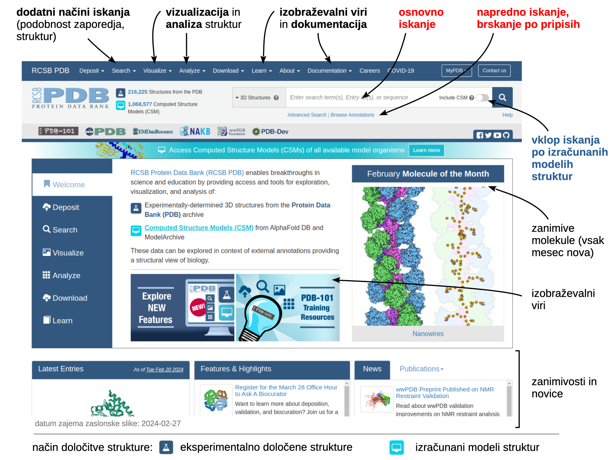

Eksperimentalno določene strukture#
Na tej strani so na kratko predstavljene najpomembnejše zbirke podatkov o strukturah bioloških makromolekul in njihovih kompleksov.
PDB (Protein Data Bank)#
Uvod#
Zbirka Protein Data Bank (PDB) je največja in najpomembnejša zbirka eksperimentalno določenih struktur bioloških ter biološko-relevantnih makromolekul, predvsem gre pri tem za proteine, nukleinske kisline ter njihove komplekse. Za uraden začetek zbirke štejemo leto 1971, ko sta zbirko ustanovila Cambridge Crystallographic Data Centre (UK) and Brookhaven National Laboratory (USA), kasneje pa je bdenje nad zbirko prevzel Research Collaboratory for Structural Bioinformatics (RCSB; USA). Več o zgodovini zbirke lahko preberete tukaj. Danes za delovanje zbirke skrbi mednarodna organizacija wwPDB, članice pa so RCSB PDB, PDBe (PDB Europe), PDBj (PDB Japan) ter EMDB (Electron Microscopy Data Bank) in BMRB (Biological Magnetic Resonance Data Bank). Medtem ko RCSB PDB, PDBe in PDBj vsebujejo ekvivalentne podatke (razlike so v vmesniku, dodatnih možnostih ipd.) pa sta zbirki EMDB in BMRB specializirani za podatke, pridobljene s pomočjo krio-elektronske mikroskopije in spektroskopije na osnovi jedrske magnetne resonance.
Leta 2021 je zbirka PDB praznovala 50-letnico delovanja, kar so med drugim obeležili s posebnim video posnetkom s kratko predstavitvijo zbirke in podatkov:
Opomba
V nadaljevanju je predstavljen dostop do zbirke RCSB PDB in njena uporaba – to zbirko bomo uporabljali tudi pri predmetu Strukturna biologija, za poimenovanje pa je uporabljena kar kratica PDB in ne popolna kratica RCSB PDB. Način interakcije s podatki v PDBe se nekoliko razlikuje, še bolj drugačen pa je pri zbirki PDBj.
Vsebina zbirke#
Zbirka vsebuje eksperimentalno določene strukture (rentgenska kristalografija (X-ray crystallography), krio-elektronska mikroskopija (cryo-electron microscopy), spektroskopija na osnovi jedrske magnetne resonance (NMR spectroscopy) idr.). Od leta 2022 omogoča dostop tudi do t.i. izračunanih modelov struktur (computed structure models, CSM), pripravljenih z AlphaFold in RoseTTAFold. Nekaj zbirk modelov je opisanih tukaj.
Vsak zapis v zbirko lahko enolično identificiramo preko t.i. PDB ID oz. identifikatorja (identifier, v drugih zbirkah temu rečemo koda za dostop oz. accession code), ki je sestavljen iz kombinacije črk in številk (skupno štirje znaki, na primer 2EC2). To sicer ne velja za CSM – slednji imajo daljše identifikatorje, primer slednjega za nek AlfaFold model je AF_AFA0A132Z2Z7F1. Zapise lahko identificiramo tudi preko posebne kode DOI, ki vsebuje PDB ID – primer take kode za PDB ID 2EC2 je 10.2210/pdb2EC2/pdb.
Spletna stran#
Osnovna spletna stran PDB nudi številne možnosti, od iskanja struktur in orodij za njihovo analizo in vizualizacijo do dokumentacije in izobraževalnih vsebin.

Iskanje po zbirki#
Po zbirki lahko iščemo z uporabo iskalnih terminov (osnovno in napredno iskanje), kot iskalni termin pa lahko služi celo aminokislinsko zaporedje (iskanje struktur s podobnim zaporejem) ali makromolekulska struktura (iskanje podobnih struktur). Rezultate iskanja lahko dodatno filtriramo, na primer prikažemo samo tiste iz nekega organizma ali skupine organizmov, glede na metodo določitve strukture, ločljivost ipd. Posamezne strukture lahko tudi izberemo ter hkrati na svoj računalnik prenesemo več zapisov, rezultate iskanja pa lahko izvozimo tudi v obliki tabele (posebej lahko prilagodimo, katere podatke naj vsebuje).
Do posameznega zapisa v celoti dostopamo s klikom na PDB ID ali naslov strukture.
Osnovno iskanje#
Do osnovnega iskanja dostopamo z glavne strani, kjer se nahaja iskalno polje (zaslonska slika zgoraj). Spodaj je prikazan primer rezultatov iskanja s terminom ‘transposase’, ki je na dan 2024-02-27 dal 179 eksperimentalnih struktur (prikaz CSM je bil izklopljen).
Napredno iskanje#
Do naprednega iskanja (Advanced Search) dostopamo s klikom na povezavo pod poljem za osnovno iskanje ali preko glavnega menija (Search). Uporabimo lahko t.i. iskanje po polnem besedilu (Full Text), kjer z enim ali večimi termini, vpisanimi v polje ter kombiniranimi preko Boolovih operatorjev AND, OR ali NOT, iščemo po vseh atributih zapisov, ki vsebujejo besedilo.
Primer iskanja zapisov, ki vsebujejo hkrati besedi ‘transposase’ in ‘inhibitor’ ali hkrati besedi ‘transposase’ in ‘activator’ (klik na Count pri posameznem polju nam že vnaprej pove, koliko zadetkov lahko pričakujemo):
V zgornjem primeru iskanje zgolj s posameznimi termini ‘transposase’, ‘inhibitor’ in ‘activator’ da 179, 40501 oz. 19704 zadetkov, iskanje kot prikazano zgoraj kot celota pa 15 (od tega jih 14 odpade na ‘transposase’+’inhibitor’, 1 pa na ‘transposase’+’activator’ – to sicer ni enostavno razvidno, narediti moramo ločeni iskanji).
Še bolje lahko možnosti naprednega iskanja izkoristimo z uporabo posebnih polj, kjer lahko iščemo glede na:
atribute strukture (Structure Attributes): metoda, s katero je bila določena, število atomov, število aminokislinskih ostankov, število polipeptidnih verig, …, skratka, skoraj glede na karkoli kar vam srce poželi ;
oglejte si možnosti, vsak atribut ima pripisano razlago (z miško pokažite na );
nekateri atributi lahko imajo zgolj točno določeno vrednost, ki jo izberemo iz spustnega seznama (npr. X-DAY DIFFRACTION), pri drugih ra lahko gre za razpon vrednosti (npr. ločljivost v območju od 1 do 2 Å);
nizkomolekularne kemijske komponente (Chemical Attributes), prisotne v strukturi;
podobnost:
zaporedja (Sequence Similarity), pri čemer vnesemo iskalno zaporedje ali izberemo zapis z nekim identifikatorjem v PDB in iščemo z zaporedjem v tistem zapisu (glede na podobnost zaporedja lahko iskanje izvajamo tudi preko npr. BLAST, pri tem pa moramo izbrati ustrezno zbirko – več o tem pri Biokemijski informatiki),
podobnost strukture (Structure Similarity), pri čemer preko identifikatorja izberemo določeno strukturo v PDB ali pa jo naložimo z našega računalnika (iskanje po podobnosti strukture lahko izvajamo tudi z drugimi orodji izven zbirke PDB);
kratkim motivom v strukturi (Structure Motif), pri čemer izberemo neko strukturo in določimo, s katerim delom te strukture bomo iskali (določimo torej strukturni motiv);
kemijsko podobnost (Chemical Similarity), kjer vnesemo sestavo nizkomolekularne spojine.
Kot primer je spodaj prikazano iskanje struktur, ki hkrati izpolnjujejo vse navedene pogoje:
so določene z X-žarkovno kristalografijo (X-RAY DIFFRACTION), pri tem pa so bili difrakcijski podatki posneti do ločljivosti 1.5 Å ali boljše,
vsebujejo med 2 in 4 makromolekulskih verig (Total Number of Polymer Instances (Chains)) (bodite pozorni, da je nastavljeno zgornje število na 5, a je zgornja meja izključena),
vsebuje proteinske oz. polipeptidne verige (Polymer Entity Type),
makromolekula je človeškega izvora (Scientific Name of the Source Organism).
Dne 2024-02-28 je bilo zadetkov, ki ustrezajo vsem tem pogojem, 2595.
Brskanje po pripisih#
Zbirko lahko pregledujemo tudi glede na pripise zapisov (Browse Annotations), pri čemer pa so na voljo številne možnosti, med drugim:
termini Gene Ontology (GO):
biološki proces, pri katerem makromolekula sodeluje (Biological Process),
kje v celici se makromolekula nahaja oz. opravlja funkcijo (Cellular Component),
kakšno funkcijo opravlja (Molecular Function),
klasifikacija struktur CATH (prikazano spodaj), SCOP-e in SCOP2,
klasifikacija encimov v razrede (Enzyme Classification),
termine MeSH,
organizem (Source Organism) ter še nekatere druge možnosti.
V vseh primerih gre za nek hierarhičen prikaz zapisov v zbirki PDB glede na pripise.
Ogled posameznega zapisa#
Kot primer si bomo ogledali zapis, ki predstavlja strukturo homo-dimernega proteina, določeno z X-žarkovno kristalografijo, in sicer gre za NADPH:FMN oksidoreduktazo iz Vibrio harveyi z vezanim FMN in fosfatnim ionom (PDB ID 1BKJ).
Na vrhu strani s posameznim zapisom najdemo na prvem zavihku (Structure Summary) vse glavne podatke o strukturi, pod tem pa se nahajajo deli, kjer so ločeno predstavljene makromolekule in pa majhne molekule ter ioni. Za makromolekule najdemo povezavo na zbirko zaporedij, povezave do podobnih zaporedij ter nekaj osnovnih podatkov, kartiranih na zaporedje (hidrofobnost, neurejenost ipd.), prikazano pa je tudi, kateri deli makromolekul so sploh razvidni v modelu strukture (UNMODELED). Za majhne molekule je podatkov manj, v glavnem gre za povezavo na zbirko majhnih spojin, prikaz 2D strukturnega diagrama ter povezavo na prikaz interakcij z makromolekulo v 3D. Tu je pomembno omeniti, da ima vsaka majhna molekula ali ion svojo unikatno oznako, ki je identična za pojavljanje iste molekule v drugih strukturah.
Preko zavihkov lahko dostopamo do 3D vizualizacije strukture (zavihek Structure – vizualizacija v 3D z orodjem Molstar – uporaba opisana posebej), pripisov, eksperimentalnih podatkov, zaporedja idr. Izredno uporabna je povezava Sequence Annotations na osnovni strani zapisa (zavihek Structure Summary), nahaja se pod sličico strukture. Omogoča nam prikaz pripisov (npr. lokacija vezavnega mesta ipd.) direktno na 3D prikazu strukture z orodjem MolStar. Kot primer je prikazano označeno vezavno mesto za FMN:
MolStar
Orodje MolStar, integrirano na spletni strani PDB, sicer deluje popolnoma enako kot isto orodje na primarni strani MolStar, razlika je pa v tem, da imamo le v okviru zbirke PDB direkten dostop do pripisov in izjemno enostavno možnost njihovega prikaza na strukturi.
Z metodo določitve strukture povezane razlike
Posamezni zapisi v zbirki so oblikovani na enak način, pomembnejše razlike pa izvirajo iz specifik metod, s katerimi so bile strukture oz. modeli določeni. Razlika je že v validacijskem poročilu, tukaj pa je navedenih še nekaj drugih najbolj očitnih razlik:
Strukture, določene z NMR spektroskopijo, so deponirane kot ansambli modelov (ponavadi 20 modelov), ki vsi ustrezajo eksperimentalnim podatkom ter stereokemijskim omejitvam.
Pri strukturah, določenih z rentgensko difrakcijo, moramo biti pozorni na razliko med vsebino asimetrične enote (ta je enaka deponiranemu modelu) ter biološko relevantni oligomerni obliki. Na primer, zaradi sovpadanja dvoštevne osi rotacije homo-dimernega proteina z dvoštevno osjo prostorske skupine imamo lahko v asimetrični enoti le eno podenoto, celoten kompleks pa dobimo z aplikacijo ustrezne simetrijske operacije. To je v zbirki posebej označeno.
Bodite pozorni na zapis pod “hitrim” prikazom strukture na zavihku Structure Summary, glejte Biological Assembly.
Modeli struktur, izračunani z AlphaFold in RoseTTAFold, imajo namesto z eksperimentom povezanih podatkov pripisane vrednosti zanesljivosti (npr. pLDDT za AlphaFold modele).
Alternativni dostopi do podatkov#
Do posameznih zapisov v zbirki PDB lahko dostopamo iz nekaterih drugih zbirk, ki vsebujejo povezave na PDB v obliki pripisov (anotacij). Primer tovrstnega dostopa predstavljajo povezave na eksperimentalno določene strukture in modele iz zapisov v zbirki aminokislinskih zaporedij UniProt. Vsaj v tem primeru velja tudi obratno – zapisi v zbirki PDB, ki vsebujejo strukture proteinov, vsebujejo kot pripis povezavo na zapis njihovega aminokislinskega zaporedja v zbirki UniProt.
Video vodič po zbirki#
Pri RCSB so pripravili zelo informativen video vodič po PDB, dolg dobrih 30 min, priporočam ogled!
Uporabne povezave#
YouTube kanali z vodiči in primeri uporabe:
NAKB (Nucleic Acid Knowledgebase)#
NAKB je nova zbirka 3D strukturnih podatkov o nukleinskih kislinah in sicer gre za naslednico NDB (Nucleic Acid Database). Zbirka pravzaprav vsebuje tiste zapise iz zbirke PDB, kjer se kot komponente pojavljajo nukleinske kisline, zaradi specifike struktur slednjih pa omogoča določene dodatne prikaze značilnosti struktur teh makromolekul. Koda oz. identifikator zapisa v zbirki PDB je enak identifikatorju v NAKB/NDB.
Kot primer je spodaj prikazan zapis za strukturno kompleksa Myc:Max, vezanega na DNA (PDB ID 1NKP). Posebnosti, povezane s strukturo nukleinske kisline, so označene z okvirčki.
BMRB (Biological Magnetic Resonance Data Bank)#
BMRB je namenjena predvsem tistim, ki se ukvarjajo z biomolekularno NMR spektroskopijo, saj prikazuje podrobnosti procesa določitve strukture s to metodo, na primer sklopitve med jedri. Za razliko od NAKB identifikatorji med PDB in BMRB niso enaki, je pa v PDB pri strukturah, določenih z NMR spektroskopijo, v glavi zapisa opaziti povezavo na BMRB, a to ne velja za vse tovrstne strukture. Na primer, za zapis s PDB ID 8U27 si lahko v BMRB pod identifikatorjem 52100 ogledamo nekatere eksperimentalne podrobnosti:
EMDB (Electron Microscopy Data Bank)#
EMDB je javni repozitorij za karte gostote, pridobljene s pomočjo elektronske krio-mikroskopije ter tomografije. Vključuje tudi končne modele struktur, ki so bili na osnovi teh eksperimentalnih podatkov pripravljeni s pomočjo analize posameznih delcev (single-particle analysis, SPA), tomografije, elektronske kristalografije (2D ali 3D) in povezanih pristopov. Identifikator zapisa v PDB ni enak identifikatorju v EMDB, je pa EMDB identifikator pripisan v glavi zapisa V PDB, podobno kot to velja za BMRB.
Kot primer so spodaj prikazane zaslonske slike zapisa v EMDB s kodo EMD-1046, ki je povezan z zapisom PDB ID 1GRU – gre pa za kompleks GroES:ADP7:GroEL:ATP7. Prikazana sta osnovni pregled (Overview) in 3D pogled (3D view), na voljo pa so še podrobnosti o vzorcu (Sample), eksperimentu (Experiment), validaciji modela strukture (Validation), “pregledovalnik volumna” oz. rezultata združevanja posameznih slik (Volume Browser) idr.
Pri 3D View lahko model strukture vrtimo v 3D, prikaz pa lahko prilagajamo preko ikon na levi strani zgoraj v okencu s prikazom ( – spreminjanje načina prikaza gostote (konturiranje, prosojnost), način prikaza proteina).
PDB-IHM (PDB Integrative anf Hybrid Models)#
PDB-IHM je zbirka modelov večjih makromolekulskih struktur/kompleksov, pridobljenih s pristopi integrirane strukturne biologije ali modeliranja. V osnovi spada pod PDB in bo v prihodnosti integrirana v to zbirko tudi integrirana, a zaenkrat obstaja ločeno zaradi specifike metodoloških pristopov, s katerimi so bili modeli pridobljeni. Vsak zapis v to zbirko vključuje seznam uporabljenih pristopov (eksperimentalno določene strukture, podatki iz prečnega povezovanja + masne spektrometrije, modeliranje, …) ter povezave na nekatere “vhodne” podatke (npr. eksperimentalno določene strukture komponent kompleksa).